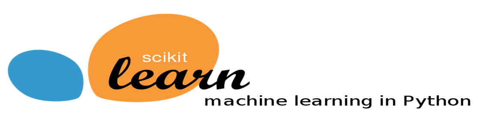

Scikit-Learn#

Scikit-learn is a machine learning library in Python that provides simple and efficient tools for data analysis and modeling. It includes various modules for tasks such as regression, classification, clustering, dimensionality reduction, and model selection. The library emphasizes ease of use, high performance, and an extensive set of algorithms, making it a popular choice for both beginners and experienced practitioners in the field of machine learning.
import sklearn
import numpy as np
import pandas as pd
np.random.seed(0)
data = pd.DataFrame({
'Target': np.random.normal(100, 10, 10),
'X1': np.random.normal(0, 5, 10),
'X2': np.random.uniform(0, 100, 10),
'X3': np.random.choice(['A', 'B'], 10),
'X4': np.random.choice(['X', 'Y', 'Z'], 10),
'X5': np.random.choice(['low', 'medium', 'high'], 10)
})
data.loc[[2, 5, 8], 'X1'] = np.nan
data.loc[[3, 6, 8], 'X2'] = np.nan
data
| Target | X1 | X2 | X3 | X4 | X5 | |
|---|---|---|---|---|---|---|
| 0 | 117.640523 | 0.720218 | 14.335329 | A | X | medium |
| 1 | 104.001572 | 7.271368 | 94.466892 | A | Y | low |
| 2 | 109.787380 | NaN | 52.184832 | A | Y | medium |
| 3 | 122.408932 | 0.608375 | NaN | B | Y | high |
| 4 | 118.675580 | 2.219316 | 26.455561 | B | Y | low |
| 5 | 90.227221 | NaN | 77.423369 | A | Z | low |
| 6 | 109.500884 | 7.470395 | NaN | B | Z | high |
| 7 | 98.486428 | -1.025791 | 56.843395 | A | Z | low |
| 8 | 98.967811 | NaN | NaN | A | X | low |
| 9 | 104.105985 | -4.270479 | 61.763550 | B | Z | low |
Pre-Processing#
Scikit-learn provides a comprehensive suite of preprocessing tools, including feature scaling, normalization, encoding of categorical variables, handling of missing data, and transformation of data into a suitable format for model training. These preprocessing steps are crucial for improving the performance and reliability of machine learning models by ensuring that the input data is appropriately formatted and scaled for the algorithms being employed.
Missing Data#
from sklearn.impute import SimpleImputer
imputer = SimpleImputer(strategy='mean')
data[['X1', 'X2']] = imputer.fit_transform(data[['X1', 'X2']])
data
| Target | X1 | X2 | X3 | X4 | X5 | |
|---|---|---|---|---|---|---|
| 0 | 117.640523 | 0.720218 | 14.335329 | A | X | medium |
| 1 | 104.001572 | 7.271368 | 94.466892 | A | Y | low |
| 2 | 109.787380 | 1.856200 | 52.184832 | A | Y | medium |
| 3 | 122.408932 | 0.608375 | 54.781847 | B | Y | high |
| 4 | 118.675580 | 2.219316 | 26.455561 | B | Y | low |
| 5 | 90.227221 | 1.856200 | 77.423369 | A | Z | low |
| 6 | 109.500884 | 7.470395 | 54.781847 | B | Z | high |
| 7 | 98.486428 | -1.025791 | 56.843395 | A | Z | low |
| 8 | 98.967811 | 1.856200 | 54.781847 | A | X | low |
| 9 | 104.105985 | -4.270479 | 61.763550 | B | Z | low |
Scaling#
Standardization
from sklearn.preprocessing import StandardScaler
scaler = StandardScaler()
data[['X1', 'X2']] = scaler.fit_transform(data[['X1', 'X2']])
data
| Target | X1 | X2 | X3 | X4 | X5 | |
|---|---|---|---|---|---|---|
| 0 | 117.640523 | -3.430349e-01 | -1.888792 | A | X | medium |
| 1 | 104.001572 | 1.635229e+00 | 1.853232 | A | Y | low |
| 2 | 109.787380 | 1.341025e-16 | -0.121277 | A | Y | medium |
| 3 | 122.408932 | -3.768082e-01 | 0.000000 | B | Y | high |
| 4 | 118.675580 | 1.096508e-01 | -1.322795 | B | Y | low |
| 5 | 90.227221 | 1.341025e-16 | 1.057325 | A | Z | low |
| 6 | 109.500884 | 1.695330e+00 | 0.000000 | B | Z | high |
| 7 | 98.486428 | -8.702807e-01 | 0.096271 | A | Z | low |
| 8 | 98.967811 | 1.341025e-16 | 0.000000 | A | X | low |
| 9 | 104.105985 | -1.850085e+00 | 0.326035 | B | Z | low |
Normalization
from sklearn.preprocessing import MinMaxScaler
scaler = MinMaxScaler()
data[['X1', 'X2']] = scaler.fit_transform(data[['X1', 'X2']])
data
| Target | X1 | X2 | X3 | X4 | X5 | |
|---|---|---|---|---|---|---|
| 0 | 117.640523 | 0.425070 | 0.000000 | A | X | medium |
| 1 | 104.001572 | 0.983048 | 1.000000 | A | Y | low |
| 2 | 109.787380 | 0.521825 | 0.472342 | A | Y | medium |
| 3 | 122.408932 | 0.415544 | 0.504751 | B | Y | high |
| 4 | 118.675580 | 0.552752 | 0.151254 | B | Y | low |
| 5 | 90.227221 | 0.521825 | 0.787306 | A | Z | low |
| 6 | 109.500884 | 1.000000 | 0.504751 | B | Z | high |
| 7 | 98.486428 | 0.276358 | 0.530478 | A | Z | low |
| 8 | 98.967811 | 0.521825 | 0.504751 | A | X | low |
| 9 | 104.105985 | 0.000000 | 0.591879 | B | Z | low |
Encoding#
Binarization
from sklearn.preprocessing import Binarizer
binarizer = Binarizer(threshold=0.5)
data[['X1', 'X2']] = binarizer.transform(data[['X1', 'X2']])
data
C:\Users\silve\AppData\Roaming\jupyterlab-desktop\jlab_server\lib\site-packages\sklearn\base.py:458: UserWarning: X has feature names, but Binarizer was fitted without feature names
warnings.warn(
| Target | X1 | X2 | X3 | X4 | X5 | |
|---|---|---|---|---|---|---|
| 0 | 117.640523 | 0.0 | 0.0 | A | X | medium |
| 1 | 104.001572 | 1.0 | 1.0 | A | Y | low |
| 2 | 109.787380 | 1.0 | 0.0 | A | Y | medium |
| 3 | 122.408932 | 0.0 | 1.0 | B | Y | high |
| 4 | 118.675580 | 1.0 | 0.0 | B | Y | low |
| 5 | 90.227221 | 1.0 | 1.0 | A | Z | low |
| 6 | 109.500884 | 1.0 | 1.0 | B | Z | high |
| 7 | 98.486428 | 0.0 | 1.0 | A | Z | low |
| 8 | 98.967811 | 1.0 | 1.0 | A | X | low |
| 9 | 104.105985 | 0.0 | 1.0 | B | Z | low |
One-Hot
from sklearn.preprocessing import OneHotEncoder
encoder = OneHotEncoder(sparse_output=False, drop='first')
data_encoded = pd.DataFrame(encoder.fit_transform(data[['X3', 'X4']]),
columns=encoder.get_feature_names_out(['X3', 'X4']))
data = pd.concat([data.drop(columns=['X3', 'X4']), data_encoded], axis=1)
data
| Target | X1 | X2 | X5 | X3_B | X4_Y | X4_Z | |
|---|---|---|---|---|---|---|---|
| 0 | 117.640523 | 0.0 | 0.0 | medium | 0.0 | 0.0 | 0.0 |
| 1 | 104.001572 | 1.0 | 1.0 | low | 0.0 | 1.0 | 0.0 |
| 2 | 109.787380 | 1.0 | 0.0 | medium | 0.0 | 1.0 | 0.0 |
| 3 | 122.408932 | 0.0 | 1.0 | high | 1.0 | 1.0 | 0.0 |
| 4 | 118.675580 | 1.0 | 0.0 | low | 1.0 | 1.0 | 0.0 |
| 5 | 90.227221 | 1.0 | 1.0 | low | 0.0 | 0.0 | 1.0 |
| 6 | 109.500884 | 1.0 | 1.0 | high | 1.0 | 0.0 | 1.0 |
| 7 | 98.486428 | 0.0 | 1.0 | low | 0.0 | 0.0 | 1.0 |
| 8 | 98.967811 | 1.0 | 1.0 | low | 0.0 | 0.0 | 0.0 |
| 9 | 104.105985 | 0.0 | 1.0 | low | 1.0 | 0.0 | 1.0 |
Ordinal Encoder
from sklearn.preprocessing import OrdinalEncoder
encoder = OrdinalEncoder(categories=[['low', 'medium', 'high']])
data['X5'] = encoder.fit_transform(data['X5'].values.reshape(-1, 1))
data
| Target | X1 | X2 | X5 | X3_B | X4_Y | X4_Z | |
|---|---|---|---|---|---|---|---|
| 0 | 117.640523 | 0.0 | 0.0 | 1.0 | 0.0 | 0.0 | 0.0 |
| 1 | 104.001572 | 1.0 | 1.0 | 0.0 | 0.0 | 1.0 | 0.0 |
| 2 | 109.787380 | 1.0 | 0.0 | 1.0 | 0.0 | 1.0 | 0.0 |
| 3 | 122.408932 | 0.0 | 1.0 | 2.0 | 1.0 | 1.0 | 0.0 |
| 4 | 118.675580 | 1.0 | 0.0 | 0.0 | 1.0 | 1.0 | 0.0 |
| 5 | 90.227221 | 1.0 | 1.0 | 0.0 | 0.0 | 0.0 | 1.0 |
| 6 | 109.500884 | 1.0 | 1.0 | 2.0 | 1.0 | 0.0 | 1.0 |
| 7 | 98.486428 | 0.0 | 1.0 | 0.0 | 0.0 | 0.0 | 1.0 |
| 8 | 98.967811 | 1.0 | 1.0 | 0.0 | 0.0 | 0.0 | 0.0 |
| 9 | 104.105985 | 0.0 | 1.0 | 0.0 | 1.0 | 0.0 | 1.0 |
Train-Test Split#
from sklearn.model_selection import train_test_split
X = data.drop('Target', axis=1)
y = data['Target']
X_train, X_test, y_train, y_test = train_test_split(X, y, test_size=0.2, random_state=0)
Model Development & Predictions#
Regression
Model |
Module |
|---|---|
Linear |
|
Poisson |
|
Gamma |
|
Ridge |
|
Lasso |
|
Elastic Net |
|
K-Nearest Neighbors Regression (KNN) |
|
Support Vector Regression (SVR) |
|
Decision Tree Regression |
|
Random Forest |
|
Ada-Boost |
|
XG-Boost |
|
Classification
Model |
Module |
|---|---|
Logistic Regression |
|
Binary Naive Bayes |
|
Multinomial Naive Bayes |
|
Ridge |
|
Lasso |
|
ElasticNet |
|
K-Nearest Neighbors (KNN) |
|
Support Vector Machine (SVM) |
|
Decision Tree |
|
Random Forest |
|
Ada-Boost |
|
XG-Boost |
|
Clustering
Model |
Module |
|---|---|
Agglomerative Hierarchical Clustering |
|
K-Means |
|
Gaussian Mixture Model (GMM) |
|
DBSCAN |
|
Dimensionality Reduction
Model |
Module |
|---|---|
Principal Component Analysis (PCA) |
|
Factor Analysis |
|
t-SNE |
|
Truncated SVD |
|
from sklearn.neighbors import KNeighborsRegressor
model = KNeighborsRegressor(n_neighbors=5)
model.fit(X_train, y_train)
y_pred = model.predict(X_test)
Model Evaluation#
Regression
Metric |
Module |
|---|---|
Mean Squared Error (MSE) |
|
Mean Absolute Error (MAE) |
|
Coefficient of Determination (R²) |
|
Classification
Metric |
Module |
|---|---|
Accuracy |
|
Precision |
|
Recall |
|
F1-Score |
|
Classification Report |
|
Confusion Matrix |
|
AUC & ROC |
|
Clustering
Metric |
Module |
|---|---|
Adjusted Rand Index (ARI) |
|
Homogeneity Score |
|
Silhouette Score |
|
from sklearn.metrics import mean_squared_error, mean_absolute_error, r2_score
mse = mean_squared_error(y_test, y_pred)
rmse = np.sqrt(mse)
mae = mean_absolute_error(y_test, y_pred)
r2 = r2_score(y_test, y_pred)
print(f'Mean Squared Error (MSE): {round(mse, 2)}')
print(f'Root Mean Squared Error (RMSE): {round(rmse, 2)}')
print(f'Mean Absolute Error (MAE): {round(mae, 2)}')
print(f'R-squared: {round(r2, 3)}')
Mean Squared Error (MSE): 8.86
Root Mean Squared Error (RMSE): 2.98
Mean Absolute Error (MAE): 2.47
R-squared: 0.697
from sklearn.model_selection import cross_val_score
y_train_pred = model.predict(X_train)
mse_train = mean_squared_error(y_train, y_train_pred)
cv_scores = cross_val_score(model, X, y, cv=5, scoring='neg_mean_squared_error')
cv_mse = -cv_scores
print(f'Train MSE: {round(mse_train, 2)}')
print(f'Cross-Validation MSE: {round(cv_mse.mean(), 2)}')
print(f'Test MSE: {round(mse, 2)}')
Train MSE: 58.82
Cross-Validation MSE: 75.43
Test MSE: 8.86
Model Tuning#
from sklearn.model_selection import GridSearchCV
param_grid = {
'n_neighbors': [2, 3, 4, 5],
'weights': ['uniform', 'distance'],
'metric': ['euclidean', 'manhattan']
}
grid_search = GridSearchCV(model, param_grid, cv=5, scoring='neg_mean_squared_error')
grid_search.fit(X_train, y_train)
print("Migliori parametri:", grid_search.best_params_)
y_train_pred = best_model.predict(X_train)
mse_train = mean_squared_error(y_train, y_train_pred)
best_model = grid_search.best_estimator_
cv_scores = cross_val_score(best_model, X_train, y_train, cv=5, scoring='neg_mean_squared_error')
cv_mse = -cv_scores
y_pred = grid_search.predict(X_test)
mse = mean_squared_error(y_test, y_pred)
print(f'Train MSE: {round(mse_train, 2)}')
print(f'Cross-Validation MSE: {round(cv_mse.mean(), 2)}')
print(f'Test MSE: {round(mse, 2)}')
Migliori parametri: {'metric': 'manhattan', 'n_neighbors': 2, 'weights': 'uniform'}
---------------------------------------------------------------------------
NameError Traceback (most recent call last)
Cell In[13], line 13
10 grid_search.fit(X_train, y_train)
11 print("Migliori parametri:", grid_search.best_params_)
---> 13 y_train_pred = best_model.predict(X_train)
14 mse_train = mean_squared_error(y_train, y_train_pred)
16 best_model = grid_search.best_estimator_
NameError: name 'best_model' is not defined
from sklearn.model_selection import RandomizedSearchCV
param_dist = {
'n_neighbors': [2, 3, 4, 5],
'weights': ['uniform', 'distance'],
'metric': ['euclidean', 'manhattan']
}
random_search = RandomizedSearchCV(model, param_distributions=param_dist, n_iter=10, cv=5, scoring='neg_mean_squared_error', random_state=0)
random_search.fit(X_train, y_train)
print("Best parameters:", random_search.best_params_)
y_train_pred = best_model.predict(X_train)
mse_train = mean_squared_error(y_train, y_train_pred)
best_model = grid_search.best_estimator_
cv_scores = cross_val_score(best_model, X_train, y_train, cv=5, scoring='neg_mean_squared_error')
cv_mse = -cv_scores
y_pred = grid_search.predict(X_test)
mse = mean_squared_error(y_test, y_pred)
print(f'Train MSE: {round(mse_train, 2)}')
print(f'Cross-Validation MSE: {round(cv_mse.mean(), 2)}')
print(f'Test MSE: {round(mse, 2)}')